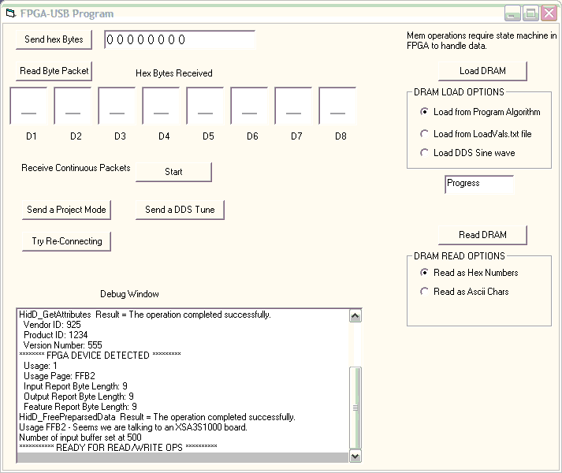

This package contains all the elements needed to test and demonstrate a USB HID communication interface on an XESS XSA-3S1000 board mounted on an XST-3 or XST-4 board. We started this project for use in our FPGA Synthesis Lab classes, and hope it will be a start toward an open source USB interface for FPGAs that requires no external controller chip.
Our USB interface component acts as a peripheral controller and contains a transceiver component that directly drives the USB differential data lines through two FPGA 3.3V IO pins. Using our USBF_IFC core, you can attach an FPGA to a USB port as easily as this:
The advantages of using this component in an FPGA are:
It requires no external USB controller or PHY chips.
It requires only two FPGA pins to interface to a USB port.
It consumes only 7% of the LUTs and 3% of the flip-flops of a XILINX XC3S1000 FPGA.
Multiple, independent USB interfaces can be housed in a single FPGA.
It is written completely in VHDL for easy porting to different applications / FPGAs / development boards.
The USBF_IFC is the top-level interface component, serving a similar function to what is frequently implemented in firmware with a microprocessor. It has a state machine that waits for interrupts from the transceiver to load data needed to service IN requests from the host and latch data received as OUT packets. It has an advantage over firmware because of its speed. The state machine operates at 50 MHz, so it takes much less than one bit time to analyze a setup request, load the output buffer, and have the data ready to send. For this reason it doesn't need more than one endpoint input or output buffer. It is fast enough to use the same buffers for EP0 or EP1 since only one is used in a transaction at a time. Consequently, a lot of the logic found in typical firmware for managing requests and pre-loading buffers isn't needed. The interface state machine just responds to the current interrupt in less than one bit-clock and then waits for the interrupt to be cleared by the transceiver.
Inside USBF_IFC, a USB_DRVR component is instantiated to act as the transceiver driving the USB differential data lines. (This component serves a function similar to USB PHY chips.) It sits and waits for tokens and packets to arrive from the host, interrupts the interface when setup requests or data are ready, and sends whatever data is loaded or requested by the interface. This component handles the following things:
It synthesizes the USB bit clock from the 100 MHz master clock on the XSA-3S1000 board and phase locks it to the NRZI signal changes in the incoming USB data.
It receives all transmissions from the host, determines whether it is a bus reset, a start-of-frame, or a token/data/status packet, stores the content, and tells the interface about content via interrupt signals.
It sends data packets or status replies (ACK, NAK or STALL) as requested by the interface.
It handles the NRZI data encoding/decoding, CRC bit checking/generation, PID checking, and screens packets for the correct USB address.
In the USB_DRVR there are two state machine running at the USB bit rate, one for receiving and one for sending data. The state machines tri-state the D+/D- line drivers as appropriate when sending and receiving. The two state machine work together, but in a sense the receive state machine is the master and the send state machine is the slave. This is because all USB transactions are initated by the host. The receive state machine detects the start of a transaction, receives the packets, signals the interface to prepare a response, then launches the send state machine to send the response, and waits for it to finish sending the packet.
This project contains several VHDL modules along with a Visual Basic Program that allows communication with the FPGA to test and demonstrate the USB interface. The various modules are described below. We rely mainly on the comments in the source code as detailed documentation and explanation for anyone interested in using and modifying the code for their own applications.
This package declares constants, arrays, and signal types used in the USB interface and transceiver. It must be added to any FPGA project that includes the USB interface. All of the USB descriptor arrays in the file are for devices, configurations, etc. of the HID that is described in Jan Axelson's book, USB Complete, 3rd Edition. These descriptors will have to be changed if you want to apply this interface to another class of USB device.
This file describes the USB interface component, USB_IFC, and the USB transceiver component, USB_DRVR.
The USB_IFC component acts as a USB HID class peripheral. The USB spec limits transaction packets for an HID to eight bytes in low-speed mode and 64 bytes in full-speed mode, but we have stuck with eight-byte packets for both modes so we could easily test at both bit rates. Hence, the main port input and output of the interface are arrays of type EIGHT_BYTES, which is array(1 to 8) of std_logic_vector(7 downto 0). The use of eight-byte IN and OUT transactions is hard-coded into the VHDL because of the history of how we got to this point. Introducing 64-byte packets and making this an easy switchover from eight bytes requires more than trivial changes, so we have put this modification off while we tested what we have.
The input array to USB_IFC is PCIn, which holds the values to be written from the FPGA to the PC host when the host executes a get_report transaction. The port output signal rd_req goes high while the PCIn array is being sent by the transceiver. The output array is PCOut, which contains the packet just written to the FPGA by the PC host via either a control transfer on EP0_OUT or an interrupt transfer on EP1_OUT. Both methods work, but the control transfers are faster when the USB hub is not busy. A port output signal new_dat pulses high when a new PCOut array is latched by the interface.
The USB_DRVR component is instantiated inside USBF_IFC and provides communication with the USB hub over the D+/D- data lines. There are two state machines inside the USB_DRVR - one to read the USB data lines and recover packets from the host, the other to drive the USB data lines and send packets to the host. The transceiver signals the interface via interrupt signals about packets received and clears the interrupts when the resulting action is completed.
This file contains the top-level module of an ISE project designed to test the USB interface in conjunction with the FPGA-USB.exe Visual Basic program on the host PC. This module shows how to instantiate the USBF_IFC, how to use its input and ouput arrays, and also how to use the mode byte sent as a feature report.
This module also contains the XESS DRAM interface module and a state machine that lets the PC read and write the XSA-3S1000 DRAM through the USB interface. We designed the DRAM access state machine to use the interface outputs, rd_req and new_dat, to coordinate with the program running on the PC. We rely on the FPGA being much faster than the PC program, so the memory access state machine has to pause and wait for the PC to either prepare and write the next packet for loading the DRAM or read the last packet read from the DRAM.
We also note that the interface makes use of the set_feature capability of an HID class peripheral to send a mode byte to the FPGA project that can control the project operation. This serves a purpose similar to setting dip switches on the XST board, but it is much more powerful and easy to use. As an example, we make use of the mode byte to activate the DRAM access state machine when doing memory write or read operations.
The USB interface module outputs a debug vector that is connected to the LEDs on the XST-3 board. Once everything is working correctly, this port signal can be left open and logic trimming during the synthesis process will eliminate the debug vector from the final circuit.
This is our modification of the XESS packages to support the DRAM interface. We have consolidated everything needed for the DRAM interface, including all declarations of FPGA-side signals, into a single package file that also includes the interface. This was done to make it a bit easier to use the XSA DRAM in our student projects.
This is the UCF file for building the USB_Demo.vhd project for the XSA-3S1000 board mounted on the XST-3. If one desires to re-build the project bit file for a different board combination, a new UCF file would have to be used. The pins used for the USB data lines were arbitrarily selected for easy plug-in to the XST-3 header.
This is the Visual Basic executable for FPGA communications. The entire VB Project is included with all the source code and the executable. Our program is based on Jan Axelson's HIDIO version 2 code for Visual Basic 6.0 from USB Complete, 3rd Edition.
The FPGA-USB program maintains a SendBuffer whose contents appear in the FPGA PCOut array after a set_report or WriteFile operation. Similarly, the contents of the FPGA PCIn array appears in the ReadBuffer of FPGA-USB after a get_report operation. Thus in the demo program, clicking the Send hex Bytes button sends 8 bytes from the window to the PCOut array in the FPGA, and displays what was sent. Clicking the Read Byte Packet button receives into the ReadBuffer whatever std_logic hex values are tied to the PCIn array in the FPGA. In the FPGA demo project, we have tied the first 5 PCIn bytes to the PCOut bytes, and bytes 6 and 7 are tied to a 16 hz counter. This lets you try out the Continuous Read mode, where the get_report is executed 5 times per second, to observe real-time changes in the FPGA values. This makes the eight-byte display act similar to LEDs.
In the FPGA-USB.exe program, the SendBuffer and ReadBuffer used for USB reports are allocated as global static byte arrays. Thus, once they are filled, they will hold those values for the next report. This makes it easy to change, say a single byte in a report and just re-send the whole 8-byte report, rather than change the report size. We opted for this approach for simplicity at both ends of a transaction. In the FPGA, the USB PCOut and PCIn arrays are simliarly latched and maintain their values until rewritten.
Insert the XSA-3S1000 board into the socket on the XST-3 Board.
Set jumper J9 on the XSA-3S1000 Board to XS.
Download the default parallel port interface into the XSA-3S1000 (\XSTOOLS\XSA\3S1000\dwnldpar.svf) if it is not already present. (Running GXSTEST will do this automatically.)
Take a standard USB AB cable and cut off the B connector (the one that doesn't attach to the PC). Strip off a few inches of insulation to reveal the individual wires. Connect the D+/D- data signals (green wire / white wire) to the D16/E14 pins of the XSA-3S1000 board (use the J4 connector of the XST-3 board to make the connections). Connect a 1.5K resistor between FPGA pin D16 and +3.3V to enable full-speed USB mode. Connect the black ground wire to a ground pin on the XSA-3S1000 or XST-3 board. Leave the red power wire disconnected.
Here is a picture of the connections to the XSA-3S1000 and XST-3 boards. The B connector was removed from a short USB cable and the individual wires were then soldered to the XST-3 board. Then a USB extender cable was used to extend a PC USB port within reach of the A connector of the modified cable.
The next picture shows the details of the connections of the USB wires to the XST-3 board. The green D+ wire connects to FPGA pin D16, the white D- wire connects to pin E14, and the blue wire connects +3.3V through a 1.5K resistor to D16.
Download the usb_demo.bit file to the XSA Board. Make sure the USB cable is not attached to the PC when the bit file is downloaded.
Attach the A connector of the USB cable to an unused port on your PC. Within a few seconds, the PC should report the presence of a new USB peripheral.
Start the FPGA-USB.exe program. The following window should appear:
When it starts up, the FPGA-USB program searches the USB devices connected to the PC to find the FPGA. So it expects the FPGA circuit to be active and successfully enumerated when it starts. There is a debug window that indicates the progress in finding the FPGA device and maintaining connectivity. If the FPGA-USB program is running and the FPGA is reloaded with the usb_demo.bit file, then you have to disconnect and reconnect the USB cable and then click on the Try Re-Connecting button to re-establish communications.
There are various command buttons and options widgets in the program window that are more or less self-explanatory. To exercise the USB link, type a string of hexadecimal numbers (e.g. 1 2 3 4 5 6 7 8) into the first field in the window and click on the Send hex Bytes button. The numbers should appear in the Hex Bytes Received fields.
Next, click the Receive Continuous Packets Start button. You should see increasing values from a 16-bit, 5-Hz counter in the FPGA displayed in fields D6 and D7.
The FPGA-USB program also has facilities for downloading data into the XSA-3S1000 DRAM and for reading data back from the DRAM to the PC.
For reasons not yet understood, there is a problem with rapid, sustained read requests. The problem occurs for both interrupt reads on EP1 and control reads on EP0. After a certain number of successful read reports, the host API software gets repeated packet errors and doesn't recover until the program does a write. This generally isn't a problem except when dumping a large block of DRAM memory from the XSA board to the PC. To make this work in the FPGA-USB program, we make a write request for every read request when dumping the DRAM. There is no problem with the sustained packet writes for loading the DRAM. We suspect this may have to do with buffers in the host hubs for handling split transactions with USB 2.0. All the PCs we tested had USB 2.0 hardware.
The 12 Mbps full speed mode worked on all 3 computers we tested it on. However, it may not work in all environments because it is difficult to synthesize and phase lock a 12 Mhz clock from the 100 MHz clock available on the XSA board. We use a 32-bit DDS accumulator for clock division and phase locking and can't avoid a 10 nsec jitter in the 12 Mhz since 100 MHz is not an integer multiple of 12 MHz. A 10 ns jitter is not comfortably within the USB spec on the full speed bit clock. (For the USB low speed of 1.5 MHz, a 10 nsec jitter is well within spec.) This is not an issue when using a different host board having a master clock that is a multiple of 12 Mhz (e.g. 96 Mhz).
Although the USB HID standard calls for an Interrupt IN endpoint, our interface works without it. The FPGA interface and transceiver HDL code allows for an interrupt EP1. Interrupt reads at repeated 1 msec intervals were tested for dumping the DRAM memory on the XESS XSA board. However, it had poorer performance than control reads and also didn't solve the read packet error problem described below. Since most of the interrupt read requests were getting NAK'ed and wasting hub bandwidth, we just left EP1 out of the Configuration Descriptor for this version of the package. This means you cannot use the API function ReadFile for read reports in the Visual Basic Program; EP0 IN and EP0 OUT are the only endpoints supported. If your application needs interrupt EP1 support, it is easy enough to add by changing the number of endpoints in the descriptor array in the HDL code.
Note that the USB cable should be unattached before your project bit file is loaded, and then attached after the download is complete. At that point, the project is held in reset until (1) the DLLs in the SDRAM interface achieve lock, and then (2) until the USBF_IFC completes enumeration. The config_done output signal from the interface goes high when enumeration is complete and the USB device driver on the PC has accepted the FPGA as an HID class peripheral. We tie config_done to bargraph LED segment 10 so we know when the FPGA is ready for USB communications. Sometimes, depending on the state of things, enumeration may not complete when the USB cable is attached. In this case the XST reset pushbutton needs to be pushed to reset the FPGA interface after the cable is disconnected, and then the USB cable needs to be re-inserted to restart enumeration. This always works for us, but you can always reload the bit file with the cable disconnected.
This example design was developed using the following version of software:
Xilinx WebPACK : 8.2.03i
You can download the source files for this example design from the XESS website at http://www.xess.com/projects/FPGA-USB-V2.zip .
If you intend to use this package and are not an expert in USB, please get this book: USB Complete, 3rd Edition, by Jan Axelson, which is heavily referenced in our code. Axelson's Visual Basic project (USBHIDIO2) was the starting point for our PC based USB-FPGA program, and the information in this book was essential to our development.
Please be aware that this whole package is not a polished product, but was developed as a senior design project by several of our graduating EEs. Hence, no guarantees or support are offered for its use.
Robert E. Jenkins - Johns Hopkins University ECE Dept.
Copyright 2009 by Robert E. Jenkins.
This application can be freely distributed and modified as long as you do not remove the attributions to the author or his employer.
02/24/2009 - Initial release.